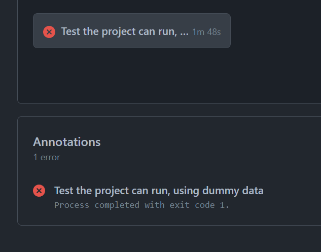

3 Outputs for release
All outputs for release should be classified as moderately_sensitive in actions. OpenSAFELY does not permit information relating to between 1 and less than 5 individuals to be released. Redaction functions are available from other users to help you prepare your output.
3.1 Tables
Use
readr::write_csv()to save.csvfiles that will be sent to output checkers (this is about twice as fast asutils::write.csv()and does not write row names).readr::write_csv(object, file = file.path("output", "mydata.csv"))Do not save outputs to subdirectories of the
outputfolder, otherwise running the study definition on GitHub Actions will probably fail with an error message such asError in file(file, ifelse(append, "a", "w")) : cannot open the connection Calls: write.csv -> eval.parent -> eval -> eval -> write.table -> file In addition: Warning message: In file(file, ifelse(append, "a", "w")) : cannot open file '/workspace/output/descriptive/tables/table1.csv': No such file or directory Backtrace: 1: file(file, ifelse(append, "a", "w")) 2: write.table(table1_all$table_body, here::here("output", "descriptive", 3: eval(expr, p) 4: eval(expr, p) 5: eval.parent(Call) 6: write.csv(table1_all$table_body, here::here("output", "descriptive", Error: Process completed with exit code 1.
3.2 Figures
- Use
.svgfor figure outputs that will be sent to output checkers - Where applicable (e.g., histograms), start the x-axis at 5 instead of 0 to ensure low counts are not exported
3.3 Releasing output
- Ensure your outputs are in the correct formats
.csv(not.rdsor.Rdata) for tables of data.txtor.htmlif you want to view them in L4
- Ensure your outputs are marked as
moderately_sensitivein yourproject.yaml - To release an output, please complete the ‘Output files for review’ section of this form and email to your assigned Bristol L4 access person
- Bristol L4 access people will check the output on the server on your behalf, complete the rest of the form (including files locations), and email to datarelease@opensafely.org for final approval